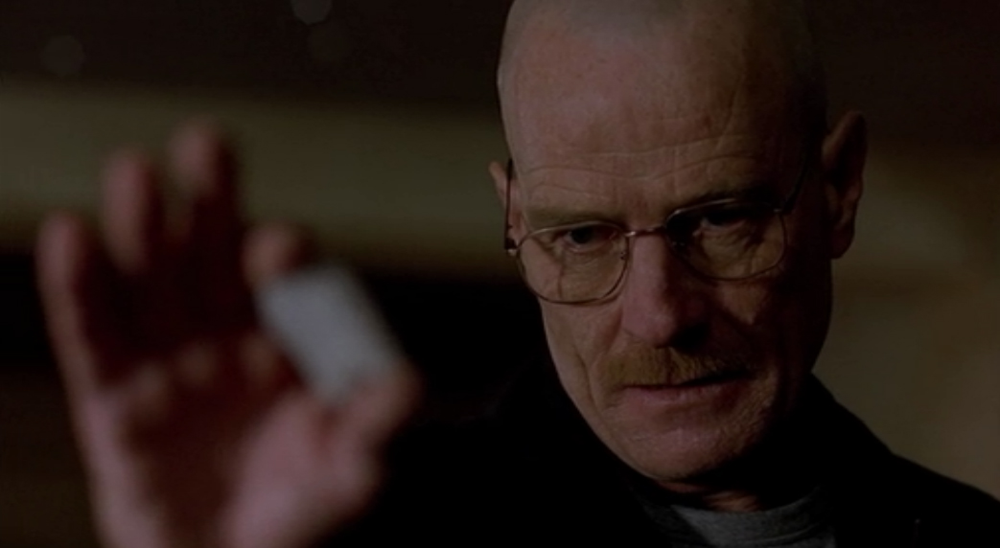

Episode 1: Chute libre
Walter White, un professeur de chimie de 50 ans, commence secrètement à produire de la méthamphétamine pour subvenir aux besoins de sa famille le jour où il découvre qu'il a un cancer du poumon en phase terminale. Il se met en équipe avec un de ses anciens étudiants, Jesse Pinkman, qui est dealer de meth. Jesse essaie de vendre la meth à des dealers : Emilio et Krazy-8. Mais les dealers sont persuadés que Jesse est une balance. Malgré tout, étonnés par l'excellente qualité de la meth, Emilio et Krazy-8 veulent rencontrer le chimiste avant de le supprimer. Pour sauver sa peau et celle de Jesse, Walter tente de les tuer avec du gaz phosphine.
Episode 2: Le Choix
Walter et Jesse doivent gérer les deux corps qui se trouvent dans le camping-car, mais la situation se complique lorsque Krazy-8 se réveille et s'enfuit. Ce dernier est vite rattrapé, séquestré et attaché avec un cadenas au poteau du sous-sol, chez Jesse. De plus, Skyler s'inquiète du comportement de Walter car elle sait qu'il fréquente Jesse et le fait fumer de l'herbe. Walter et Skyler apprennent qu'ils vont avoir une fille.
Episode 3: Dérapage
Walter n'arrive pas à décider s'il doit tuer ou non Krazy-8. Pendant ce temps, Marie pense que Walter Jr. fume de la marijuana et demande à Hank de le décourager à se droguer. Alors qu'il est en train d'apporter à manger pour Krazy-8, Walter s'évanouit en descendant l'escalier. Après s'être réveillé, Walter lui parle de son cancer. Sur le point de libérer le jeune homme, Walter décide de l'étrangler avec le cadenas qui le retenait prisonnier après avoir découvert que Krazy-8 prévoyait de le tuer aussitôt libéré.
Episode 4: Retour aux sources
Hank commence à enquêter sur les nouveaux trafiquants du quartier (sans savoir que Walter en fait partie). Walter révèle qu'il a un cancer lors d'un barbecue en famille. Skyler décide donc de prendre rendez-vous avec un des meilleurs cancérologues pour que celui-ci donne un traitement efficace à Walter. Pendant ce temps, Jesse va rendre visite à sa famille et découvre que son petit-frère fume de la marijuana en cachette. Jesse le couvre quand un joint est découvert, mais il est forcé de quitter le foyer parental.
Episode 5: Vivre ou Survivre

Elliott, un ancien ami de Walter, lui propose un travail lucratif lui permettant de couvrir ses frais de traitement. Pendant ce temps, Jesse essaie de produire de la meth lui-même, sans succès, après une dispute avec Walter. Quant à Walter Jr., il commet un acte illégal en tentant d'acheter de la bière à un flic. Skyler révèle à Hank et Marie que Walter fume de l'herbe.
Episode 6: Bluff
Walter et Jesse ont conclu un arrangement : Walter recommence à produire de la meth pendant que Jesse la vend à des particuliers dans la rue. Lors d'une thérapie en groupe, Skyler demande à Walter ce qu'il fait à ses heures perdues et il lui dit qu'il aime bien être seul de temps en temps, faire des promenades dans la nature. Plus tard, lors de la préparation de la meth, Walter essoufflé et toussant fortement, sort du camping-car pour aller prendre l'air. Jesse est alors au courant que son partenaire a un cancer et qu'il prépare de la meth pour subvenir aux besoins de sa famille. Hank questionne Walter à propos du vol de matériaux chimiques dans le lycée.
Episode 7: Le Fruit défendu
Walter et Jesse rencontrent des difficultés pour produire la grande quantité de meth promise à Tuco, parce qu'ils ont du mal à se procurer de la méthylamine, composant indispensable à la production. Ils organisent alors un vol dans un magasin de haute sécurité où ils sont sûrs d'en trouver et forcent la porte à l'aide de thermite, qui, d'après Walt, est un produit assez puissant pour mettre une immense pièce d'artillerie comme le canon Gustav hors service. Par ailleurs, Skyler met Marie dos au mur concernant sa kleptomanie.